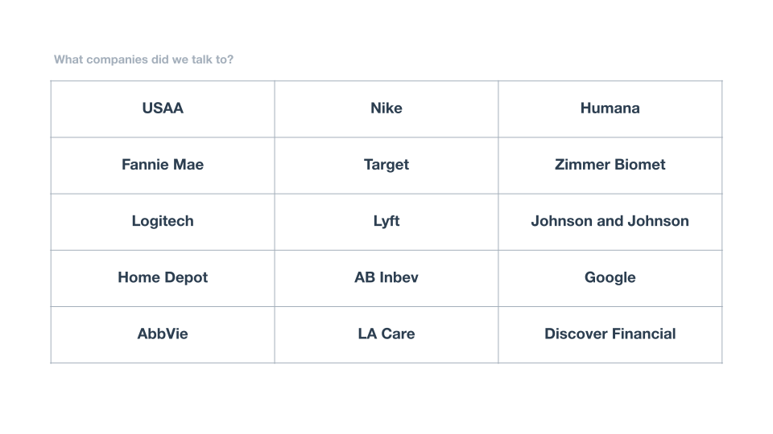
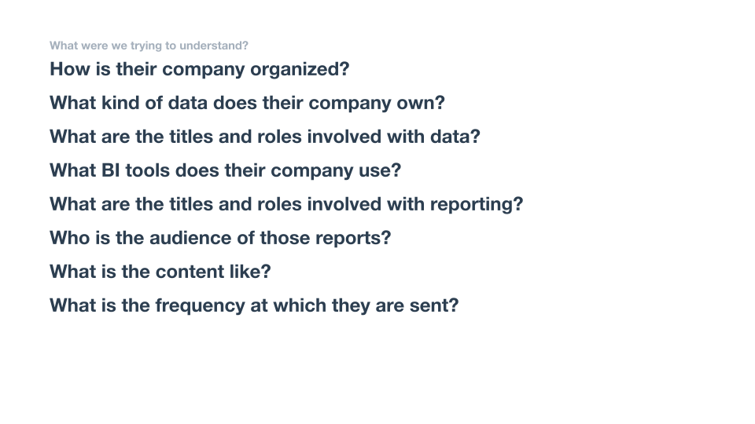
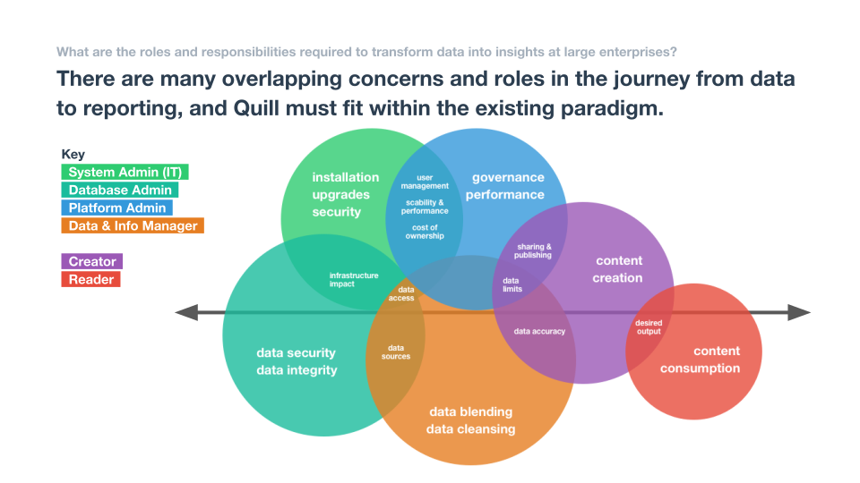
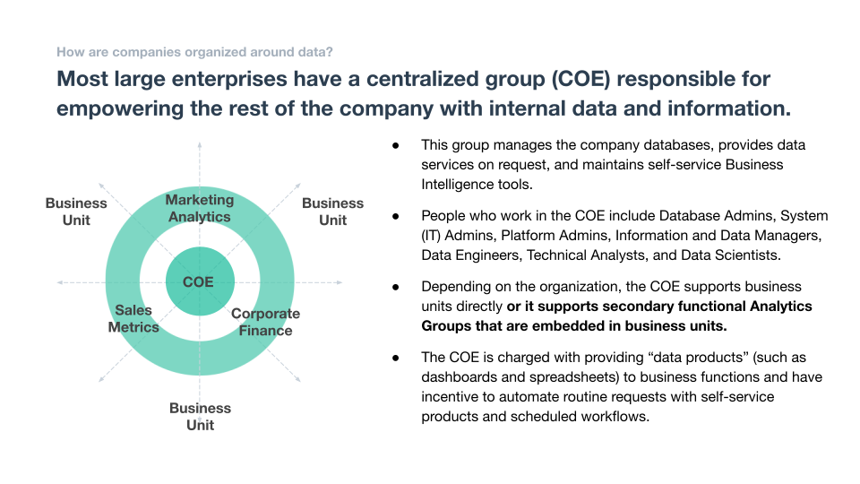
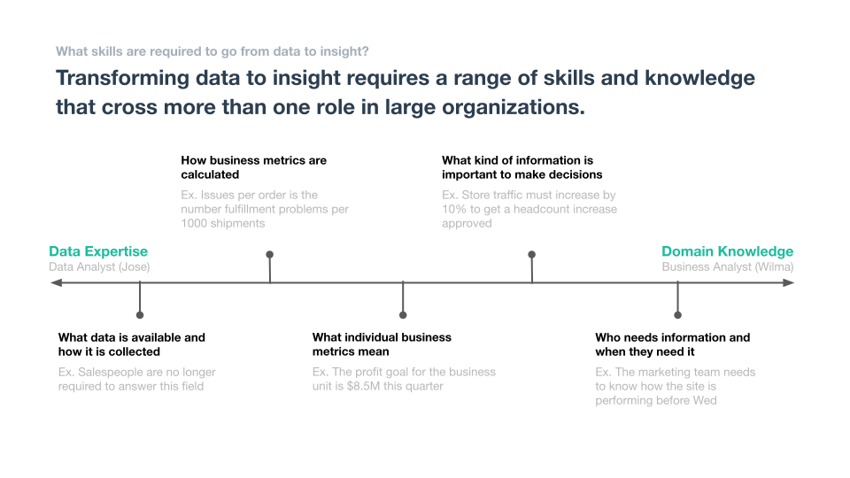
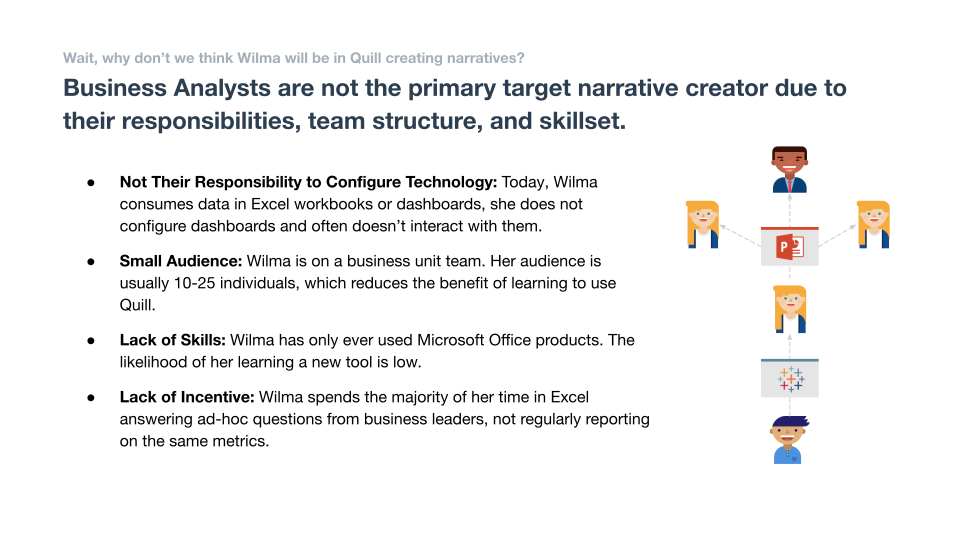
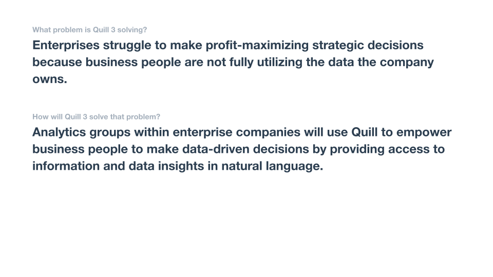
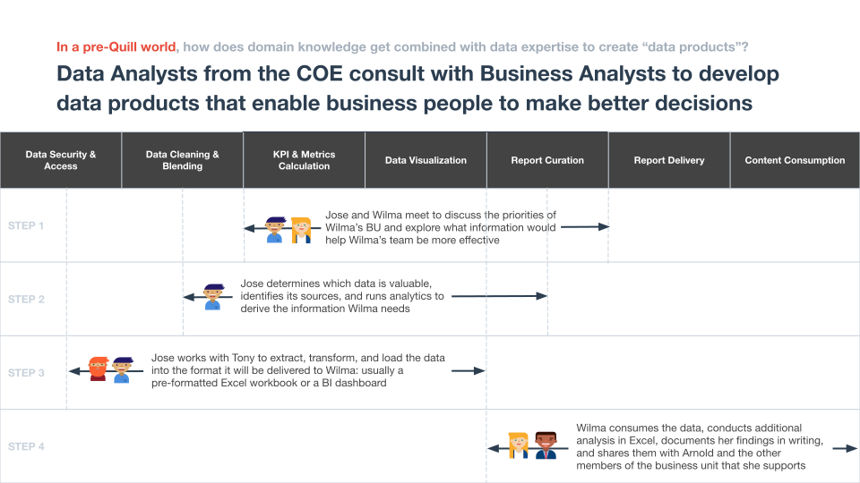
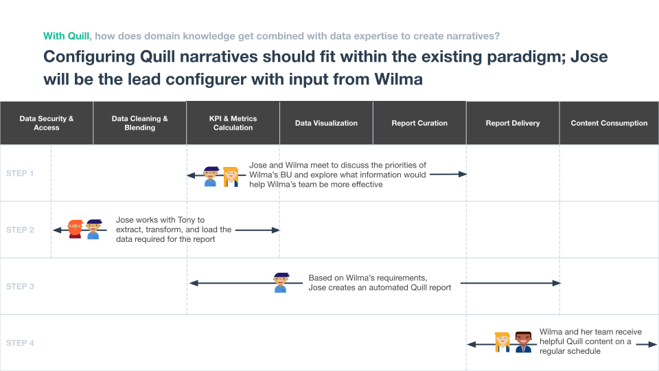

Who exactly needs data storytelling?
Two and half years into working on Quill, our data-to-natural-language platform, we realized that we did not have a clear understanding of our target customer. There were two pilots in progress, one with a US Intelligence contractor, called IQT Labs, and another with consulting giant, Deloitte. We also had hopes of moving our existing customer base, mostly financial institutions, from the old platform to the new. The spread of use cases was wide, sharing little in the form of data structure, language requirements, and most significantly, user personas. We knew we needed more focus.
The full product and design team embarked on an 8 week research effort, with the charge of developing a perspective on who our target customer should be, so that we could design the platform to suit their needs. We interviewed people across 15 different companies, in order to understand how their organizations used data and where we could create value.
These slides record the output of our research.
        The team included Andrew Paley, Sharon Chen, Chris Strong, Pooja Parthasarathy, Dan Platt, and Mike Pham.